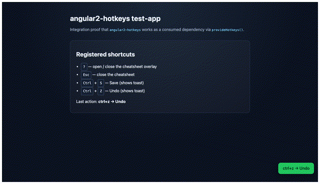

Research inventory
Every API evaluated in Phase 1 (committed before migration code).
| API | Applicable | Status | Affected file(s) | Notes |
|---|
API migration flow
@Input()input()
constructor(DI)inject()
zone.js CDprovideZonelessChangeDetection()
eager overlay@defer (when helpVisible())
effect + signal listlinkedSignal() + resource()
ngOnInit bindafterNextRender + effect
Before / after code
@Input() hotkeys: HotkeyBindingMap[] = [];
constructor(
private hotkeysService: HotkeysService,
private elementRef: ElementRef,
) {
this.mousetrap = new Mousetrap(
this.elementRef.nativeElement,
);
}
ngOnInit(): void {
for (const hotkey of this.hotkeys) { ... }
}readonly hotkeys = input<HotkeyBindingMap[]>([]);
private readonly hotkeysService = inject(HotkeysService);
private readonly elementRef = inject(ElementRef);
constructor() {
afterNextRender(() => {
this.mousetrap = new Mousetrap(
this.elementRef.nativeElement,
);
this.bindAll(this.hotkeys());
});
effect(() => this.rebind(this.hotkeys()));
}Zoneless compatibility matrix
| Feature | With zone.js | Zoneless | How verified |
|---|---|---|---|
| Hotkey binding (global) | Pass | Pass | Service specs + zoneless suite |
| Cheatsheet toggle (?) | Pass | Pass | Signal write → UI class .in |
| Cheatsheet close (Esc) | Pass | Pass | Callback sets signal false |
| Directive element scope | Pass | Pass | afterNextRender bind |
| Pause / unpause | Pass | Pass | registryVersion signal |
| resource() sheet load | Pass | Pass | hasValue() after open |
Test coverage
- Tests: 34 → 45 (+ zoneless suite)
- Coverage gate: 80% → 85%
- Legacy APIs removed: @Input, constructor DI in components/directives
- zone.js in test-app: required → removed
Live keyboard demo (simulated zoneless signals)
Press ?, Esc, Ctrl+S, or Ctrl+Z on this page. Demo uses the same signal patterns as the library (no zone.js).
Last action: (none yet)
Cheatsheet: closed
Keyboard Shortcuts:
- ? toggle cheatsheet
- Esc close
- Ctrl+S save
- Ctrl+Z undo
Preview

Implementation commits (local)
- 1RESEARCH.md
≥12 APIs documented incl. resource() + linkedSignal()
- 2Signal component model
input(), inject(), linkedSignal, resource, afterNextRender
- 3Zoneless support
Dedicated suite + test-app without zone.js
- 4@defer + packaging + docs
Cheatsheet defer, peers ≥20, README, UI